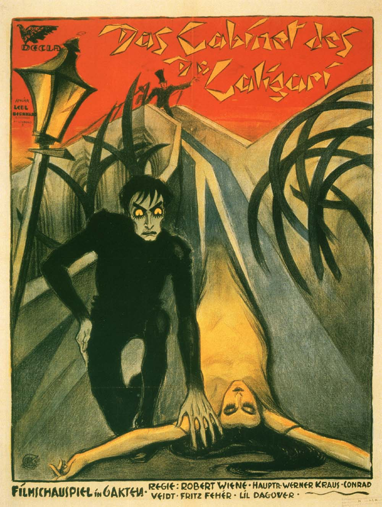
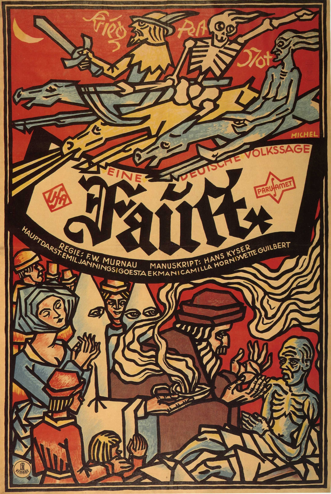
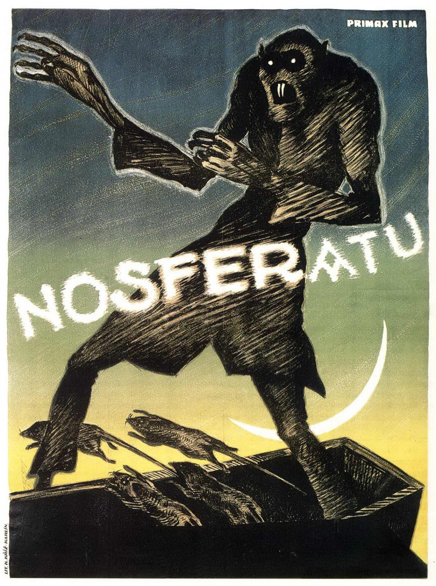

О течении
Немецкий экспрессионизм состоял из ряда связанных творческих движений в Германии до Первой мировой войны,
достигших пика в Берлине в 1920-х годах. Эти события в Германии были частью более крупного экспрессионистского
движения в северной и центральной европейской культуре в таких областях,
как архитектура, танец, живопись, скульптура, а также кино. Немецкое экспрессионистское движение первоначально
было ограничено Германией из-за изоляции, которую страна испытала во время Первой мировой войны.
В 1916 году правительство запретило зарубежные фильмы. Спрос со стороны кинотеатров на создание
фильмов привел к увеличению отечественного кинопроизводства с 24 фильмов в 1914 году до 130 фильмов в 1918 году.
Первые фильмы экспрессионистов вызвали нехватку щедрых бюджетов, используя множество дизайнов с дико нереалистичными,
геометрически абсурдными углами, а также рисунки на стенах и полах, представляющие свет, тени и объекты.
В сюжетах и рассказах фильмов экспрессионистов часто рассматривались безумие, безумие, предательство
и другие «интеллектуальные» темы, вызванные опытом Первой мировой войны.
Два жанра, на которые особенно повлиял экспрессионизм, – фильм ужасов и фильм нуар.

«Кабинет доктора Калигари», Роберт Вине, 1920
Первый в истории кино полнометражный фильм ужасов. Отсутствие звука только добавляет напряжения.
По сюжету молодой человек Фрэнсис рассказывает своему случайному собеседнику ужасную историю,
которая приключилась с ним совсем недавно. Вместе со своим другом и невестой он попал в сети к странному и страшному
доктору Калигари, который развлекает людей на ярмарке, представляя публике сомнамбулу Чезаре, выполняющего все его
приказания. Режиссер фильма Роберт Вине отважился на крайне смелый эксперимент –
с помощью визуальных средств создать на экране ощущение внутреннего хаоса, безумия, передать измененное
состояние человеческой психики. Расстройство, внутренняя нестабильность главного героя воплощается на экране при помощи
съемки с острого угла и так называемой субъективной (шатающейся) камеры. Игра актеров экзальтирована, их мимика и
жестикуляция утрированы, изобилуют крупные планы. Выходу фильма в Берлине в 1920 году предшествовала оригинальная
рекламная кампания: по всему городу были развешаны плакаты с надписью «Ты должен стать Калигари!» без каких бы то ни было дополнительных пояснений.

«Фауст», Фридрих В. Мурнау, 1926
Поспорили архангел Михаил и Сатана: добро и зло – что сильнее? В центре пари высших сил – доктор Фауст, ученый старец,
само благородство и воплощенное знание. Отчаявшись спасти свой город от чумы, он обращается-таки за помощью к темным
силам, вызвав из Тьмы Сатану – и тот дарует ему чудесную силу, и Фауст исцеляет умирающего больного. Но первый же пациент,
в руках которого оказывается святой крест, становится для Фауста препятствием; и жители, поняв, что дело нечисто,
изгоняют нерадивого лекаря прочь. Взамен всеобщего счастья Сатана наделяет Фауста личным счастьем – вечной молодостью,
затем обновленного старца настигает любовь. Его Гретхен – мила, добра и нежна, но счастью, устроенному посредством
дьявольских козней не быть – в конце фильма оба сгорают на костре и души их возносятся.
«Фауст» — очень серьёзный фильм, с удивительными декорациями и потрясающей операторской работой.
Стилистика Мурнау символична и всеобъемлюща. Несмотря на наличие вполне реалистичных сцен на улицах средневекового
города, режиссёр в большинстве сцен пытается избавиться от любых пространственно-временных привязок. Тёмные кадры с
причудливой пляшущим светом переносят действие фильма в сферы духовного, придают событиям вселенский масштаб.
Апокалиптические всадники и появление на экране ангелов и дьяволов в стилистике немого кино смотрятся совершенно
адекватно и естественно.

«Носферату, симфония ужаса», Фридрих В. Мурнау, 1922
Первая, вольная экранизация романа Брэма Стокера «Дракула», фильм «Носферату, симфония ужаса» по праву считается
шедевром немецкого экспрессионизма. В немой картине с помощью трюков с тенями и освещением Мурнау воссоздал
пленительную и пугающую атмосферу ночного кошмара. Этим фильмом он заложил основы стиля хоррор, которому было суждено
бесповоротно изменить ход истории кино.
Сюжет повествует о молодом клерке Хуттере, который по делам службы направляется в таинственный трансильванский замок.
Его владелец, граф Орлок, с давних пор пользуется дурной славой среди местных жителей. Уже в окрестностях замка Томаса
Хуттера ожидает неприятный сюрприз: нанятые возницы отказываются ехать дальше. Остаток горной дороги путешественнику
приходится преодолеть пешком. Загадочный граф лично встречает растерянного Томаса на пороге своего жилища.
Демонический хозяин выглядит скорее, как призрак и совершенно не выносит яркого солнечного света. Какие немыслимые
кошмары доведется пережить герою в жутком замке? Почему гостеприимный Орлок при свете дня должен спать глубоким сном?